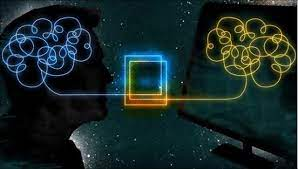

Interacción Humano Ordenador
La Interacción persona-computador es una disiplina que se dedica a diseñar, evaluar e implementar sistemas informaticos que sirvan y ayuden a la interracción para el uso humano, junto con el estudio de algunos fenómenos relacionados con esto. Este estudio tiene importancia, objetivo, origen y principios en los que ayuda a la aplicacion y mejoramiento de este tema.
